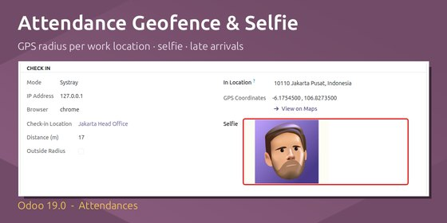
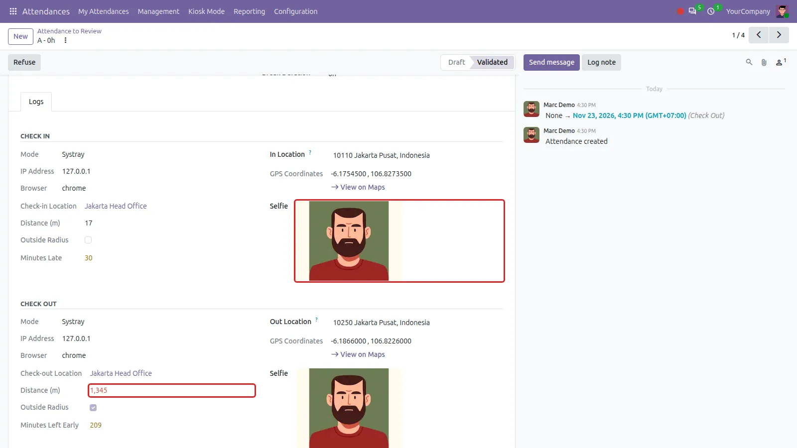
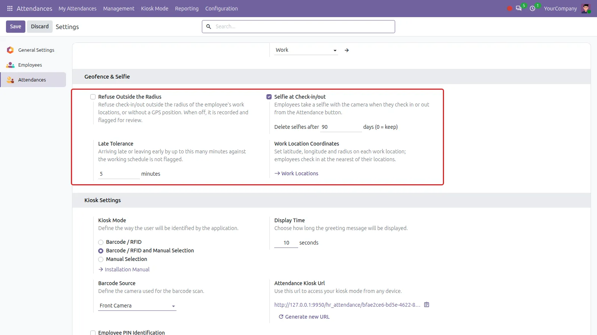
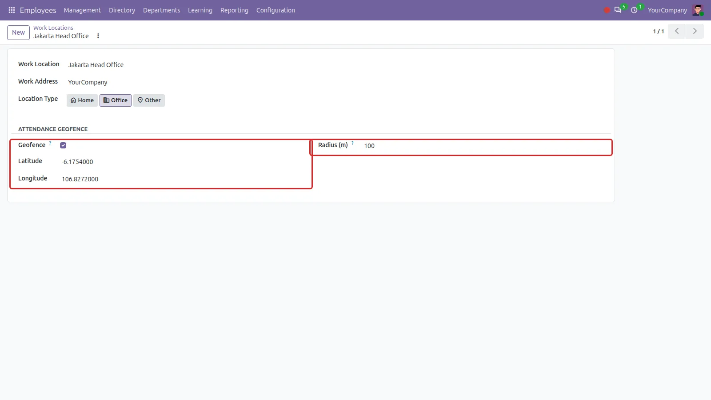
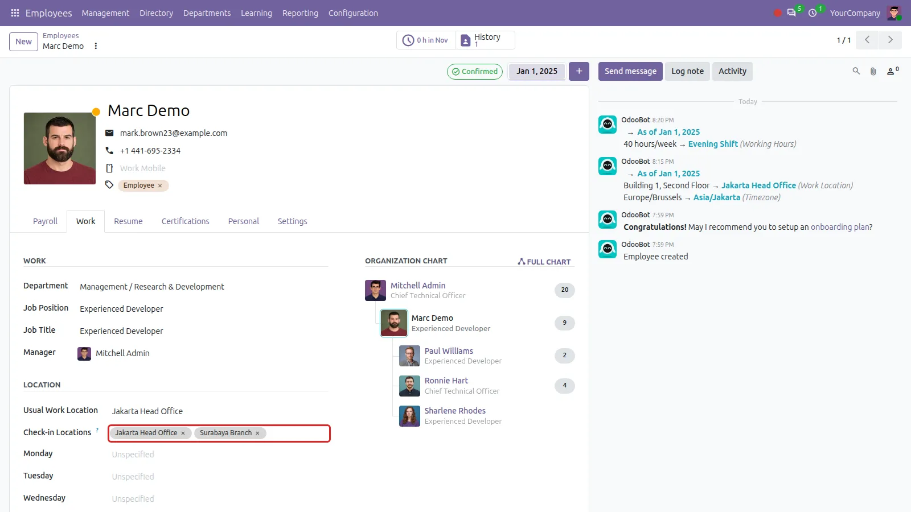
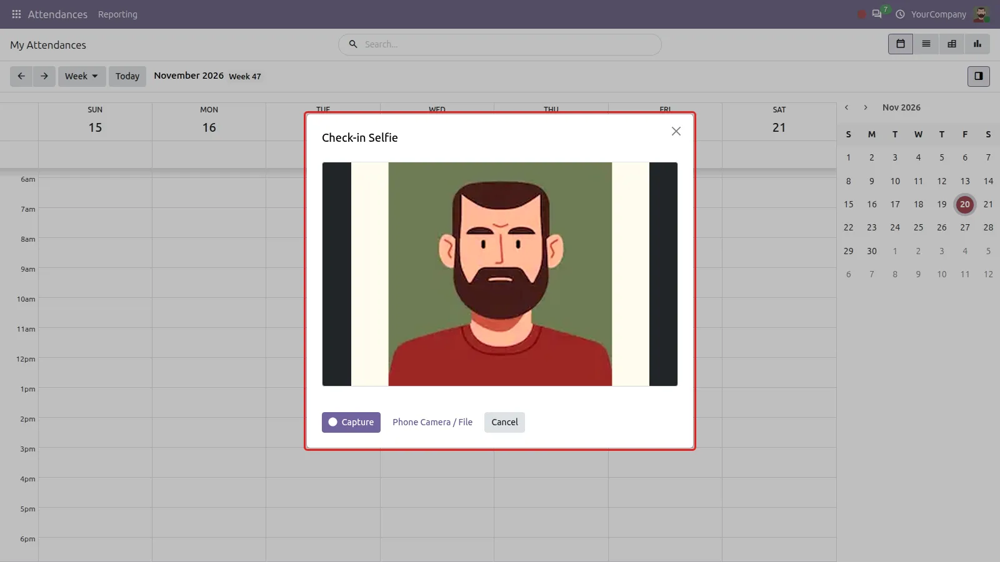
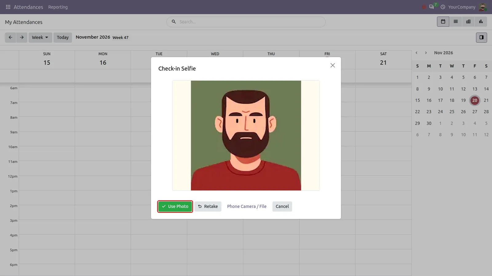
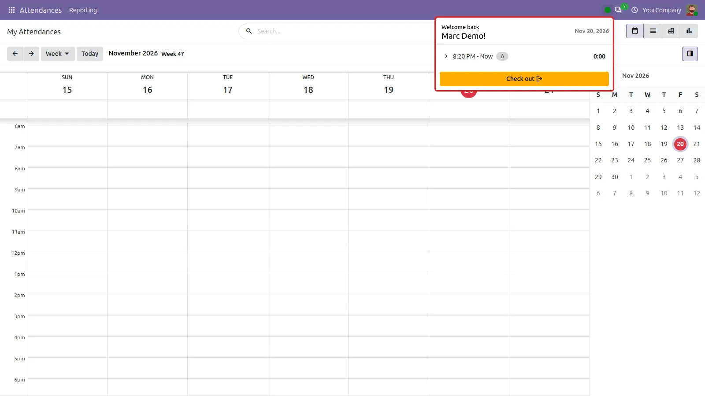
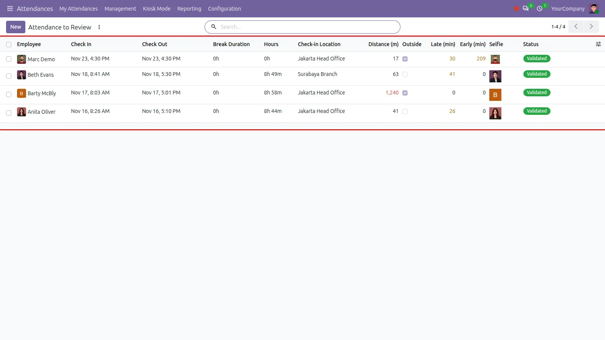
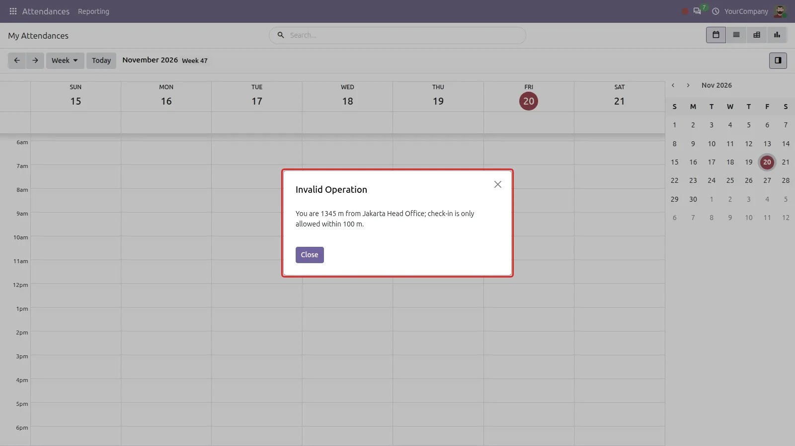

Attendance Geofence and Selfie - GPS Check-in
Attendance geofence: GPS radius per work location, a selfie at check-in and check-out, and late arrival or early leave against the working schedule.
- Price
- $69
- Odoo versions
- 17.0
- 18.0
- 19.0
- 20.0
- Technical name
tamadoo_attendance_geofence- License
- OPL-1

Text and screenshots below are from the Odoo 20.0 version of this module.
Know that people checked in where they should: GPS radius per work location checked on the server, a selfie at check-in and check-out, and late arrivals against the schedule.

What you get
Geofence per location
Coordinates and a radius on each work location. Employees with several sites check in at the nearest one.
Checked on the server
The distance is recomputed from the GPS position. Outside the radius is flagged — or refused if you choose.
Selfie in and out
Front camera at check-in and check-out, phone camera or file as fallback. Old selfies are deleted automatically.
Late & early
Minutes late and left early against the working schedule, with a tolerance. Rest days are never late.
Step by step
1. Settings
Attendances → Configuration → Settings → Geofence & Selfie.

2. Coordinates and radius on each work location
Attendances → Configuration → Work Locations. Right-click the spot in Google Maps to copy its coordinates.

3. Optional: several check-in locations per employee
On the employee's Work tab. Empty means the employee's work location.

4. The employee checks in from the top bar
The position is read and a selfie is taken with the camera.



5. HR reviews what needs attention
Overview → To Review: outside the radius, late, or left early.

6. Or refuse check-ins outside the radius
With Refuse Outside the Radius on, the employee gets a clear message instead.

Set up in 3 minutes
- Enable Attendances from Backend and choose the Geofence & Selfie options.
- Add latitude, longitude and radius to each Work Location.
- Optionally give employees extra Check-in Locations.
Requirements: Odoo 20.0 with Attendances, served over HTTPS (browsers only allow GPS and camera on secure pages). Kiosk check-ins are geofenced from the kiosk device's position.
Get Attendance Geofence and Selfie
Questions before buying? Write to tama.odoo@gmail.com.